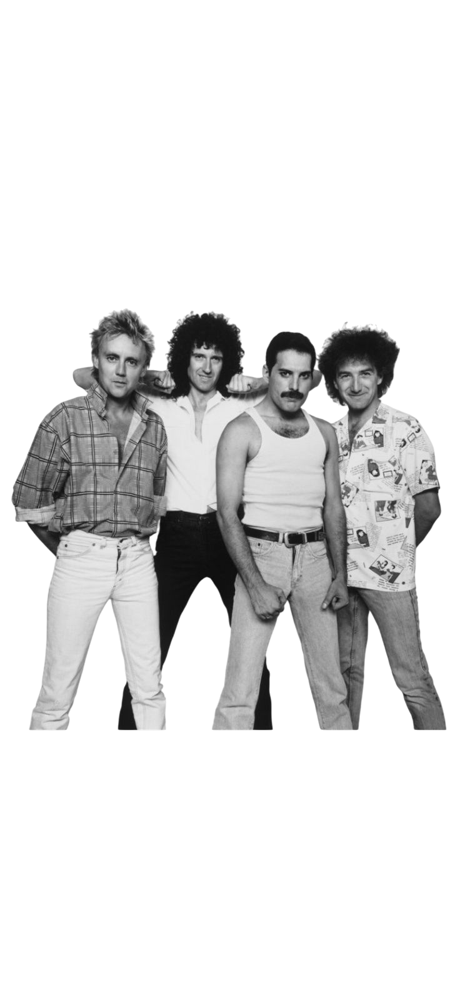
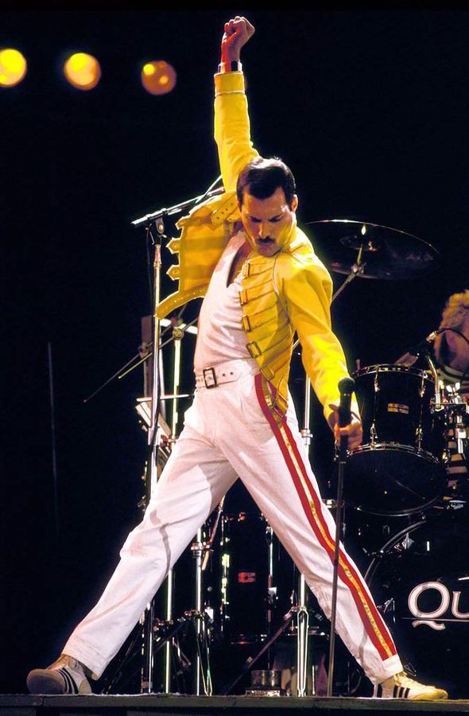

Quem foi Freddie Mercury?
Freddie Mercury (nome de nascimento Farrokh Bulsara; nascido em Stone Town em 5 de setembro de 1946 e falecido em Londres em 24 de novembro de 1991) foi um cantor, compositor e pianista britânico, amplamente reconhecido por seu papel como vocalista da banda de rock Queen. É frequentemente lembrado como um dos maiores vocalistas da história da música. Fonte: Wikipedia
- 1946 – Nasce em Stone Town
- 1970 – Forma a banda Queen
- 1985 – Live Aid
- 1991 – Falece em Londres
*°•*°
Curiosidades
Curiosidades
- Ele adorava gatos, teve vários ao longo da vida.
- Seu nome de nascimento é Farrokh Bulsara.
- Ele escrevia letras e compunha músicas no piano.
- Amava se vestir de forma extravagante nos shows.
*°•*°
"I won't be a rock star. I will be a legend." — Freddie Mercury
Clique para tocarüé∂
⭐
Assista um show icônico:
Galeria
⭐
üéµ
✨
üé∂

⭐
üéµ
✨
üé∂

Freddie Mercury em 1980, capturado enquanto canta e interage com os integrantes da banda no palco, mostrando seu talento único.
⭐
üéµ
✨
üé∂
⭐
üéµ
✨
üé∂